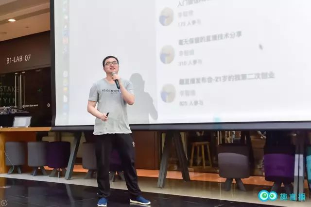

## تجربة ريادة الأعمال في مجال البث المباشر | أصلي، ترجم بواسطة AI

في وقت سابق، أقامت منصة Quzhibo (趣直播) ندوة تبادل خبرات حول نمو وتطور التقنيين، حيث شاركنا الرئيس التنفيذي للمنصة، Li Zhiwei (李智维)، بتجربته الشخصية في ريادة الأعمال. فيما يلي الفيديو:
إليك النسخة النصية:
كيف أنشأنا هذه المنصة؟
ماذا تريد Quzhibo أن تفعل؟
اليوم أريد أن أشارككم،
قصة Quzhibo الماضية.

是的，锤子手机的发布会通常都办得特别盛大。每次发布会都像是一场科技界的盛会，吸引了大量媒体和粉丝的关注。罗永浩作为锤子科技的创始人，以其独特的演讲风格和幽默感，使得发布会不仅仅是产品展示，更像是一场精彩的表演。从舞台设计到灯光效果，再到精心准备的演示内容，锤子手机的发布会总是给人留下深刻的印象。
في ذلك الوقت، كنت شابًا ولم أكن أفهم الأمور جيدًا، فقمت ببناء منصة بث مباشر بنفسي، ثم قمت بالترويج لها في دائرة أصدقائي. كانت هذه هي الإصدار الأول من “Qu Live”.
在发布过程中还有一个小插曲。当时我们的宣传语是“首个知识性直播平台”，但很多人包括虾神在内，都看成了“首个性知识直播平台”。
كنت أفكر دائمًا، ماذا علي أن أفعل؟
أنا الذي لا أملك شيئًا، ما هو أسهل شيء يمكن أن أنجح فيه؟

لقد فكرت طويلاً، بما أنني أعرف شخصيات كبيرة مثل Ye Gucheng و Tang Qiao، هل يمكنني إنشاء منصة بث مباشر ودعوتهم لإجراء مشاركات؟
“أولاً، قم بإنشاء منصة يستخدمها الناس”، كانت هذه هي فكرتي الأولية.
إذن، لنقم بإنشاء منصة بث مباشر. كنت قد قمت بترجمة وتجميع كود الواجهة الأمامية والخلفية للمنصة وإطلاق المنتج بمفردي. الكثير من المعرفة حول الواجهة الأمامية والخلفية تعلمتها أثناء مراجعة الكود والتعاون مع GuCheng، وقد جاءت في الوقت المناسب.
إذا كنت تجيد العديد من المهارات، فلن تكون مقيدًا عند القيام بأي شيء.

平台刚刚创立的时候，没有人气也没有主播。跟很多程序员一样，我做事很独立，遇到问题都是自己解决。没有主播，那就自己播。
后来认识了宜龙，也就是我的前同事。宜龙来公司比我晚，我经常会去帮助他，他有时也会帮帮我，慢慢地我们就变成了好朋友。我有时也会去蹭宜龙的饭局。通过身边的牛人朋友，去蹭他们的饭局，可以结识更多的牛人。

وقت الجميع محدود، لذا حاول قضاء أكبر وقت ممكن مع الأشخاص المتميزين، لأن هؤلاء الأشخاص قد يكونون أكثر فائدة لي.
لاحقًا، كان لي الشرف أن أدعو شخصيات بارزة مثل Xianhua و Gucheng لإجراء بث مباشر على منصتنا، مما ساهم تدريجيًا في اكتساب المنصة بعض الشهرة. ستلاحظ أنه إذا كنت تعمل في مجال متخصص بشكل كبير، فإن دعوة الضيوف يصبح أمرًا أسهل، حيث يمكنك دعوة خبراء بارزين في مجالات مختلفة من عالم التكنولوجيا، مثل Chen Gang و Qin Chao و Miao Shen.
بعد أن سلكت طريق ريادة الأعمال، أعمق شعور لدي هو أنني لم أكن شجاعًا بما يكفي في القيام بالأمور.

على سبيل المثال، مثل喵神 و巧哥، كان بإمكاني دعوتهم للبث المباشر بعد بث Yilong، خاصة وأن العديد من أصدقائهم قد بثوا على منصتنا. لكني كنت دائمًا أشعر بأنني لم أتحدث معهم من قبل، وخشيت أن يتم رفضي أو تجاهلي تمامًا، مما جعلني أعيش في خوف مستمر ولم أجرؤ على التواصل معهم بشكل مباشر، وبدلاً من ذلك اخترت بعض المذيعين الذين لا يتمتعون بنفس مستوى تأثيرهم.
لاحقًا، مرت الشركة بفترة من الخسارة، وعندما عدت إلى المنزل للاحتفال بالعام الجديد، كانت بضع مئات من اليوانات التي بحوزتي من والدي. أختي كانت تشتكي قائلة: “أنت كبير بما يكفي، وكان ينبغي عليك أن توزع مظاريف حمراء على الكبار والصغار، ولكنك في الخارج تبني مشروعك الخاص، وليس لديك فلس واحد، حتى أنك لا تستطيع توزيع المظاريف الحمراء.”
ذلك كان الوقت الذي شعرت فيه بأكبر قدر من الحزن والألم. آلام الرجال تكبر بسبب مثل هذه الأمور.
回到北京后，我变得更加勇敢，开始主动邀请各种大V来我们平台做直播。要知道，邀请他们做主播，并不是说他们的坏话，更不是黑他们。而且，大V们本来就是乐于分享的，所以根本不需要害怕，积极主动地与他们交流就好。
事实也是如此，正是凭借着这股冲劲，我们先后邀请到了巧哥、喵神、Sunny来我们平台进行直播，当月平台就实现了盈利。
في كل مرة تضع نفسك حقًا في موقف صعب، ستضطر إلى محاربة نقاط الضعف التي بداخلك، تلك العيوب الإنسانية.

لاحقًا، أوصيت السيد ييه بمسؤول تقني، كان يتمتع بقدرات قوية وساعده في حل مشكلة كبيرة. عندما رأى السيد ييه أن منصتنا تحقق أرباحًا وأن صناعة الدفع مقابل المعرفة لديها آفاق واعدة، قدم لنا استثمارًا.
لذلك عليك أن تحقق إنجازات بنفسك أولاً. عندما تكون ذا قيمة للآخرين، سوف يستثمرون فيك. على سبيل المثال، إذا كان راتبك السنوي 2 مليون، فسيكون من السهل نسبيًا الحصول على تمويل بقيمة 2 مليون. بعد كل شيء، قدراتك واضحة للعيان.
بعد الحصول على التمويل، فإن الخطوة التالية التي يجب عليّ التفكير فيها هي كيفية إدارة الفريق بشكل جيد، وهذا يمثل التحدي الذي أواجهه.
以上就是趣直播的故事，也是我的创业心得。
شكرًا لكم جميعًا!